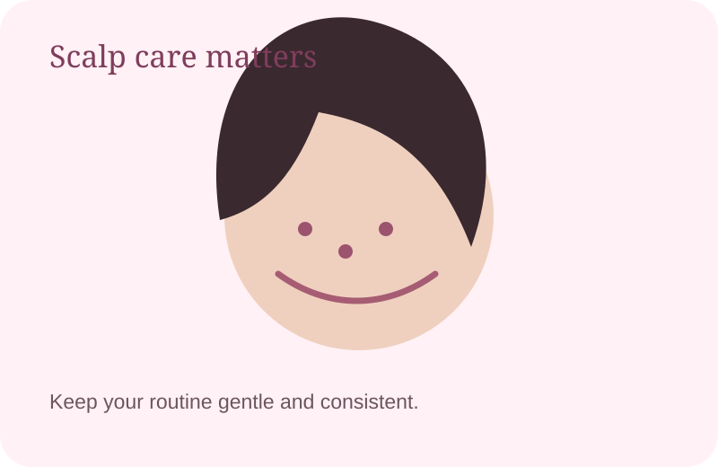
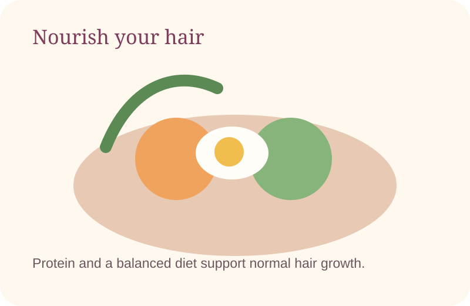
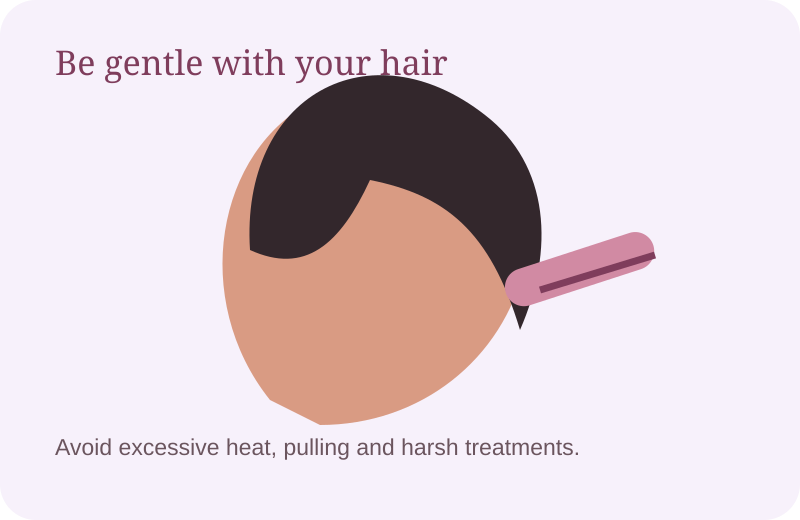

Introduction
Seeing extra hair on your comb, pillow, or shower floor can be worrying. Some daily shedding is normal, but persistent or sudden hair loss can have many different causes, including genetics, stress, nutrition, hormonal changes, scalp conditions, medicines, and hair-care practices.
The good news is that you can improve the basics of your hair-care routine. Here are 10 practical tips that focus on reducing unnecessary breakage and supporting healthy hair.
1. Keep Your Scalp Clean

A clean, comfortable scalp is an important part of a healthy hair routine. Use a shampoo that suits your scalp and wash as needed. If you have persistent dandruff, redness, pain, or itching, consider speaking with a dermatologist.
Gentle scalp care can be a useful part of your routine.
2. Be Gentle When Combing
Pulling hard through knots can cause unnecessary hair breakage. Detangle from the ends and slowly work upward. A wide-tooth comb can be helpful for tangled hair.
3. Limit Excessive Heat Styling
Frequent high heat from straighteners, curling irons, and very hot blow-dryers can damage the hair shaft. Use moderate heat, avoid daily styling when possible, and use a suitable heat protectant.
4. Eat a Balanced, Nutrient-Rich Diet

Your hair needs adequate nutrition. Include protein-rich foods such as eggs, dairy, lentils, beans, chickpeas, soy foods, nuts, and seeds along with fruits and vegetables. Avoid starting high-dose supplements unless a healthcare professional recommends them.
A balanced diet provides nutrients needed for normal body and hair function.
5. Avoid Crash Diets
Very restrictive diets and rapid weight loss can be associated with increased shedding in some people. Choose a balanced eating pattern rather than extreme dieting.
6. Avoid Very Tight Hairstyles
Regularly wearing very tight ponytails, buns, braids, or other styles that pull on the hair can cause repeated tension. Choose looser styles and change hairstyles regularly.
7. Reduce Harsh Chemical Treatments
Frequent bleaching, relaxing, perming, or other chemical treatments can leave hair dry and fragile. Give damaged hair time to recover and keep your routine as gentle as possible.
8. Manage Stress and Prioritize Sleep
Significant or prolonged stress can be associated with increased shedding in some people. Regular movement, relaxation, a consistent sleep schedule, and healthy daily routines can support overall wellbeing.
9. Protect Your Hair From Unnecessary Damage

Use gentle handling, avoid aggressive towel rubbing, and give your hair breaks from repeated heat and chemical styling. These steps may help reduce breakage and keep hair looking healthier.
Gentle styling helps protect the hair shaft from avoidable damage.
10. Find the Cause of Persistent Hair Loss
Different types of hair loss need different approaches. If shedding continues, becomes noticeably worse, or you develop thinning or bald patches, finding the underlying cause is more useful than repeatedly changing products.
Simple Hair Care Routine
- Use a shampoo appropriate for your scalp.
- Condition the lengths when needed.
- Detangle gently, starting from the ends.
- Limit frequent high-heat styling.
- Avoid hairstyles that constantly pull on the hair.
- Eat a balanced diet with enough protein.
- Prioritize sleep and healthy stress-management habits.
When Should You See a Dermatologist?
Consider professional evaluation if hair loss is sudden or rapidly increasing, you notice bald patches, your scalp is painful or persistently itchy, or your hair is becoming noticeably thinner over time.
Frequently Asked Questions
Can hair fall be stopped completely?
Not every type of hair loss can be completely prevented. The best approach depends on the cause. Gentle care can reduce avoidable breakage, while persistent hair loss may need professional evaluation.
Does oiling stop hair fall?
Hair oil can improve softness and manageability for some people, but it does not treat every cause of hair loss. Persistent shedding should be evaluated based on its cause.
Can stress cause hair shedding?
Significant or prolonged stress can be associated with increased shedding in some people. If shedding continues or becomes severe, discuss it with a healthcare professional.
What foods support hair health?
A balanced diet with adequate protein and varied nutrient-rich foods can support normal hair growth. Examples include eggs, dairy, lentils, beans, chickpeas, soy foods, nuts, seeds, fruits, and vegetables.
Medical disclaimer: This article is for general educational information and is not a substitute for medical diagnosis or treatment. If you have significant or persistent hair loss, consult a qualified healthcare professional or dermatologist.